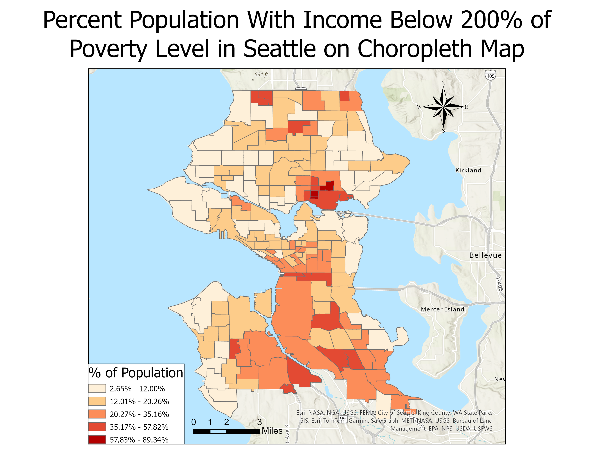
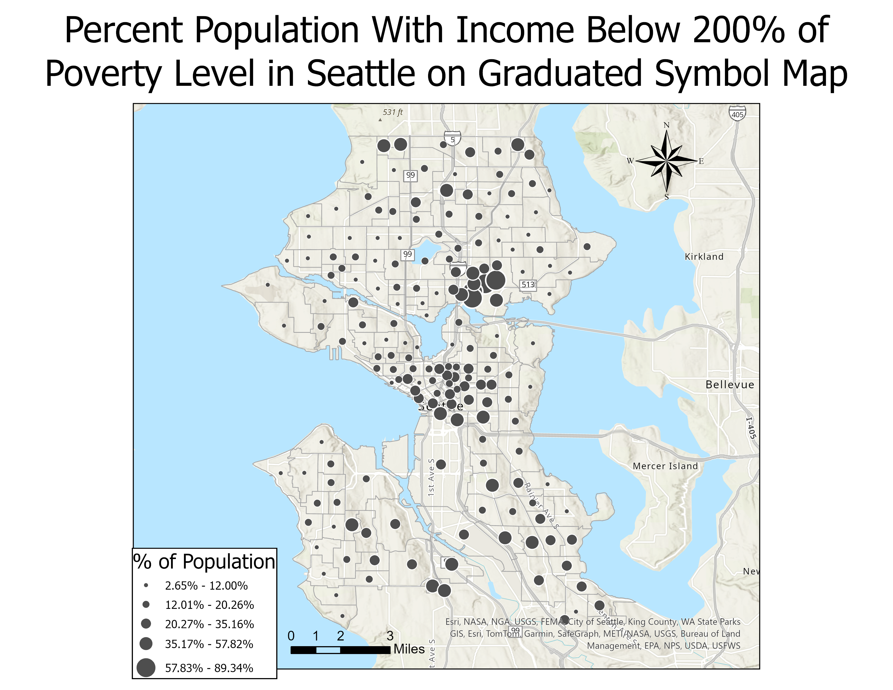

Seattle Collision Heatmap
Project Timeline: 4 weeks
As part of a group project in GEOG 328 (Web-Based GIS), I collaborated with four students to create an interactive heatmap depicting vehicle collision severity in Seattle. Utilizing GeoJSON data from the Seattle Department of Transportation, we focused on a 21-month period from March 2022 to December 2023, condensing a dataset spanning 20 years for storage efficiency.
Development stack:
- Mapbox
- Python (GeoPandas)
- HTML
- CSS
- JavaScript
- Github
Dataset: SDOT Collisions All Years
Washington State COVID Map
Project Timeline: 1 week
This interactive choropleth map shows the cumulative COVID-19 deaths across Washington at the county level. The user can hover over each individual county to view the mortality rate, measured as deaths per 10,000 people.
Development stack:
- Mapbox
- HTML
- CSS
- JavaScript
- Github
Dataset: NY Times COVID-19 Data
Poverty in Seattle


Project Timeline: 1 week
Poverty mapped in Seattle using two different classification methods.
Development stack:
- ArcGIS Pro